Character biblePersonal project · dossier 06 of the Studio
Yasser.
The builder who answers at 2 a.m. — and the black cat who decides if it's good enough.
tired eyes · big ideas · same energy.
VOIDSPLUNKER.std is the character bible of Yasser and Kūro: a personal project of the founder of Numidea Labs, made without a client and shown here as a portfolio piece. It holds a live rig of twenty frames, a profile and the rules of the silhouette, twelve faces, twelve poses, ten cards for Kūro, the way Yasser talks and a behaviour sheet. The page is in English.

He's alive
move your cursor · click him


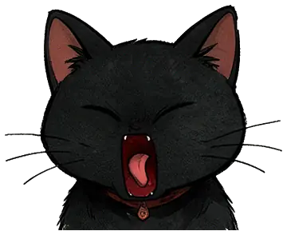

Twenty drawn frames, one rig. Only the face swaps between frames, so nothing else jitters. Breathing, lean, steam, speech and the two-frame squash are code. He talks, follows you, and settles when you stop.
- Gaze
- Cursor left third → glance ←, right edge → glance →, top of screen → looks up. 110 ms dwell so he never flickers on a line. His whole body leans toward you.
- Talk
- Click him, or press "Say a line": the marker bubble types at 38 ms a character, the mouth flaps between three frames and shuts on punctuation. One line in three starts with the glasses push.
- Click
- Once: a two-frame squash and a line. Twice within 2.5 s: he laughs, Kūro goes wide.
- Rest
- He breathes and blinks for five seconds after your last move, then settles on his base frame. Nothing on this page moves on its own for longer than that.
- Drowsy
- "Go idle": a yawn, then heavy eyes; Kūro yawns three seconds later. Any move wakes him with a blink and a smirk.
- Kūro
- Follows your cursor 320 ms late, watches Yasser while he talks, flicks an ear, goes wide-eyed on a fast scroll.
Who he is
The profile sheet: who the character is, what he wants and fears, and where he sits on six axes.
- Name
- Yasser Hamisse
- Role
- Founder · creative director · the one who actually ships it
- Base
- Bordj Bou Arréridj, Algeria — the studio roof at dawn
- Seal
- 夜 yoru — night. He does his best work after everyone logs off.
- Fuel
- Black coffee, the Numidea mug, never a fancy order
- Partner
- Kūro クロ, a black cat with taste and no patience
- CalmChaotic
- NightDay
- TalksShips
- PolishedMessy
- SeriousDeadpan funny
- SoloWith Kūro
The silhouette
readable at 24 px or it's not himThe seven marks that make the character readable, and the six colours he is drawn in.
- 01High ponytail + two hair sticks — the crossed sticks are his crown; never drop them, even in pixel.
- 02Round thin glasses — pushed up when thinking, slid down when tired.
- 03Oversized cream coat — sumi-red lining, NUMIDEA patch on the left sleeve, hood always down.
- 04Black turtleneck + ring pendant — the ring is the "O" — it catches light in every frame.
- 05Wide black cargo + straps — utility, not costume; one strap crosses the chest.
- 06Cream sneakers, red heel tab — the red tab is the only red below the waist.
- 07Tired eyes, under-eye line — never fully wide-awake except in "shocked".
- Skin#7A4E36
- Coat#E6DCC8
- Ink#211E1B
- Sumi red#A34135
- Teal#236660
- Paper#D8CBB8
Twelve faces
each one has a jobThe twelve faces of the bible, each with the moment it was drawn for and the line that sets its tone.
SmirkHero idleDefault face. Knows it works, won't brag about it. 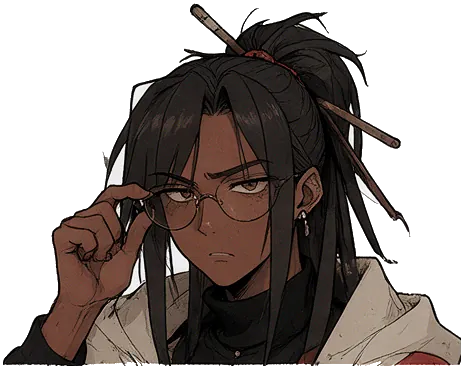
FocusServicesHeads-down build mode while you read what he does. 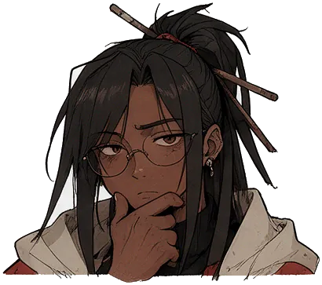
ThinkFAQEach question opens on a pause, not a sales pitch. 
PointContact CTAThe only time he breaks the fourth wall. LaughForm sentSuccess state. Real, short, then back to work. 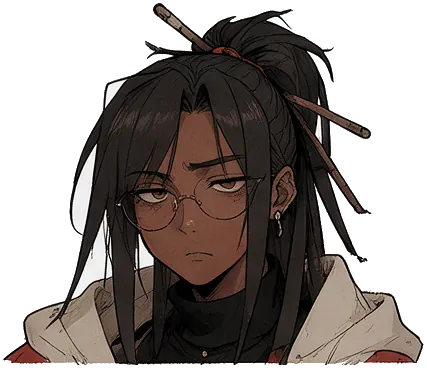
DeadpanPricingPrices stated flat. No hype, no hidden line. 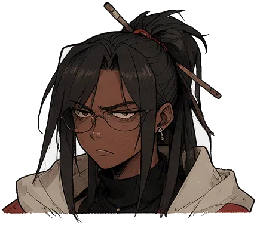
Side-eyeMiddlemenReserved for agencies that resell your project. 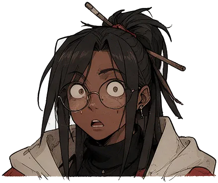
ShockedCalculatorWhen the estimate crosses a threshold. Once. 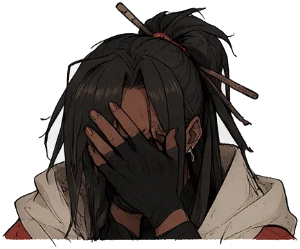
FacepalmErrors · 404Takes the blame for the bug, not the user. 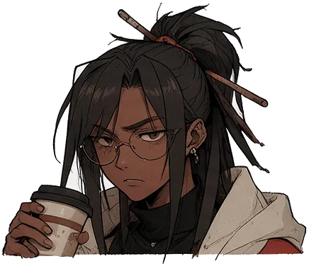
TiredAfter 23:00Night mode greeting. Still answers. 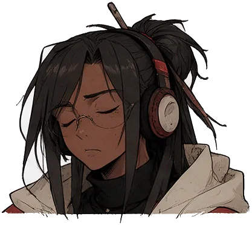
SleepIdle 60 sYou left. He dozed. Kūro keeps watch. 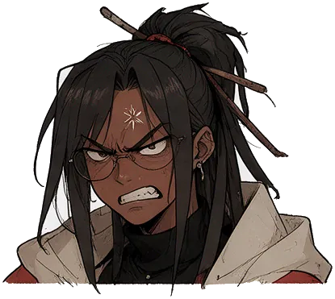
AngryLoud onlySocial red-flags content. Never on the site.
What he does
Twelve poses, each drawn for one moment of a website: where it appears, and what it says.

CoffeeHero · dawnThe first sip is the kickoff meeting. 
LaptopWorkBuilding the Preview before you pay. 
PointContactYou. Yes, you. Let's build it. 
ShrugFAQ"Can it be done?" — usually, yes. 
SignOfferHolds the deal terms up, plainly. 
Facepalm404This page is on him. 
InspectAudit lab tileMagnifier on your brand. Honest report. 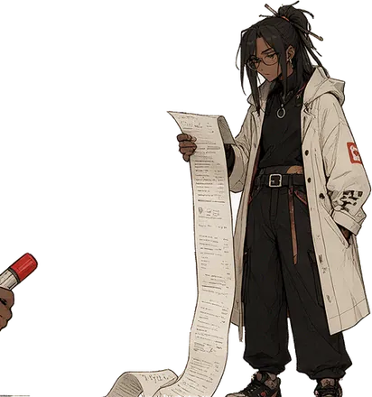
ReceiptPricingEvery line item, nothing folded in. 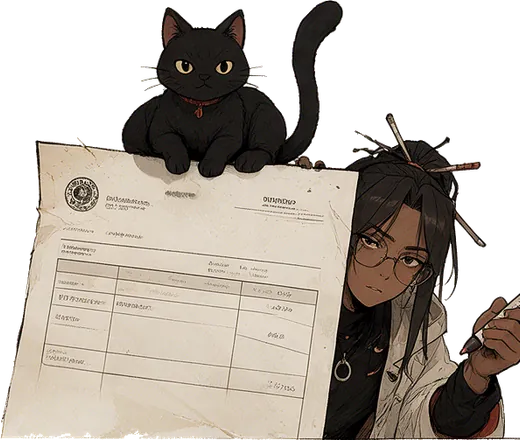
InvoiceCalculatorThe total, before the call. 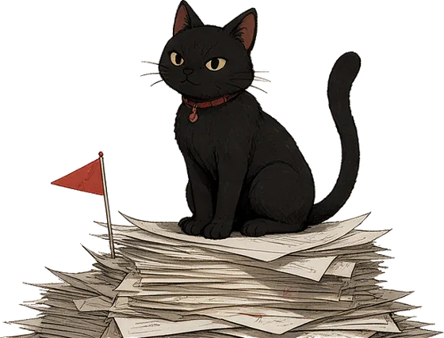
Flag stackRed flagsThings other studios won't tell you. 
HandoverDeliveryThe keys are yours. Code, domain, all of it. 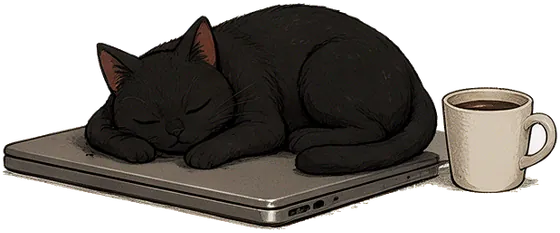
NapNight · idleShipped at 3 a.m. Earned it.
Head to toe
no more cut-off sneakersSix full-body poses, each drawn twice, so he moves once when you scroll to him and again when you hover or tap. Feet always land on the floor line — nothing is cropped.
WaveHero · helloFirst visit. Coffee in one hand, hello in the other. Point upServicesPoints at the heading, then explains it. PhoneFAQ · WhatsAppTypes the reply, looks up: answered. SketchBrandDraws your identity, checks it with you. ShippedProofLaunch day. Small fist pump, back to work. With KūroFounderCoffee break. Kūro supervises.
Kūro クロ
the quality gate has whiskersYasser builds. Kūro judges. He is the client's taste made visible — if it's sloppy, he walks off the screen; if it's good, he loafs on it.
- · Never speaks. Reacts.
- · Never cute on purpose — loyal by accident.
- · Yellow eyes are the only warm colour on him.
- · Red collar tag = the hanko. He stamps the approval.
- · Always lower in frame than Yasser, never centred alone in the hero.

JudgeHovering a CTA 
LoafGood section, settles 
SmugCase study result 
StampApproval · hanko 
PeekScroll-in from edge 
ShookPrice shock 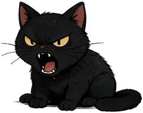
HissMiddlemen 
LoveForm sent 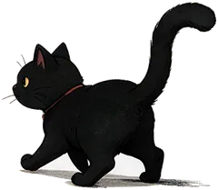
LeaveIdle · walks off 
MugSting · dawn
How he talks
The six lines the character says, in French with the English beside, and the rules of his voice.
- Tu parles à celui qui code. Pas à un commercial.You're talking to the one who codes. Not a salesman.
- Je te montre une démo qui marche avant de parler argent.I show you a working demo before we talk money.
- Prix fixe. Si ça change, c'est écrit avant.Fixed price. If it changes, it's written first.
- Il est 2 h. Oui, je réponds encore.It's 2 a.m. Yes, I'm still answering.
- Ça, c'est un bug à moi. Je le règle.That one's my bug. I'll fix it.
- Ok. On le construit ?Ok. Shall we build it?
He does
He never
Speaks in short sentences that end with a full stop.
Uses "synergy", "solutions" or "leverage".
Owns the mistake before the user notices it.
Blames the client, the browser or the server.
Mixes French and English the way BBA actually does.
Fakes slang or forces darija for flavour.
Lets Kūro deliver the joke.
Winks, thumbs-up or emoji at the camera.
Shows a receipt: a number, a demo, a link.
Claims "best", "fastest" or "#1" without proof.
A day on a site
the behaviour, beat by beatThe behaviour sheet: how the character was written to act on a website, section by section.
- 00 StingDawn · coffeeMug steam writes NUMIDEA LABS, Kūro stamps 夜, paper wipes into the hero.
- HeroSmirk · eyes followGlasses glint tracks the cursor; blink every 4–7 s; a two-frame squash when the sting lands.
- ServicesFocus · laptopKūro peeks from the right edge as rows scroll in.
- PricingDeadpan · receiptMarker note writes itself next to the total: "c'est tout."
- WorkKūro smugLoafs on whichever case tile you hover longest.
- FAQThink · shrugSwitches face each time an answer opens.
- ContactPoint · lovePoints at the field you're typing in; laugh + Kūro heart on send.
- After 23:00Tired · napScene goes night; idle 60 s and he dozes, Kūro walks off.
Back to the Studio
dossier 06 · end of fileThat was the character bible, a personal project. Numidea Labs is the studio that builds for clients: the Studio page holds the other projects, and a Preview is how a project starts.
- The StudioProjects→
- Request a PreviewOn the Studio→
- Behance@br4vetr4aveler1↗
- DeviantArtbr4vetr4veler5↗
- PinterestVOID.DESIGNER↗
- Tumblrdelicateexpertsstuff↗
- WorkspaceHQ v3a build by the founder→
- GitHub@Brvetr4ve1er↗
- LinkedInYasser Hamisse↗
- Instagram@stick_itty↗
- X@br4vetr4veler↗
- YouTube@br4vetr4aveler↗
- Telegram@nobodysamsa↗
Contact Numidea Labshamissemohamedyasser